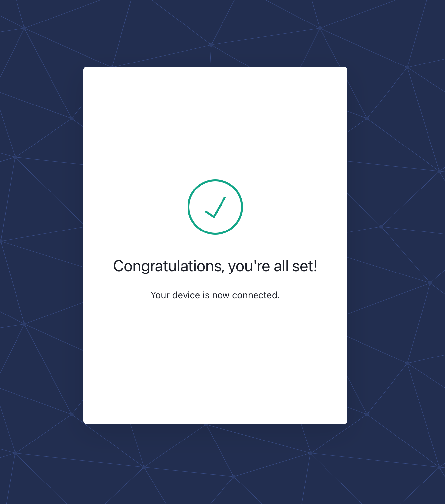

Authenticate to Deep Origin
You can sign into the Deep Origin platform using the Python Client or the CLI.
To authenticate with Deep Origin:
deeporigin authenticate
from deeporigin import auth
auth.authenticate()
In either case, you will be presented with a prompt that looks like:
To connect to the Deep Origin platform, navigate your browser to
https://<env>auth0.com/activate?user_code=VMPZ-PQFG
and verify the confirmation code is "VMPZ-PQFG", and click the "Confirm" button.
On clicking the Confirm button, you are shown:

The authentication process is then complete and access tokens are cached to disk, and will automatically be used in subsequent interactions.
Authenticating
You do not need to authenticate every time you use the client or the CLI. Authenticating once, before first use, should be sufficient.